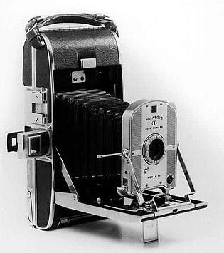

Who is behind Polaroid Cameras?
Polaroid is a pioneer in instant photography. Since 1937, Polaroid has been bringing instant photo technology to the world. Today, we continue to deliver classic instant cameras and film, while blending modern technology with vintage style.
Our History
Polaroid has a rich history, from the creation of the first instant camera to the iconic models we cherish today. Here are some of the significant milestones in Polaroid's history:
1948
1972